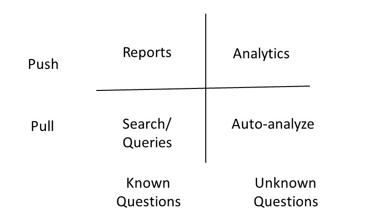
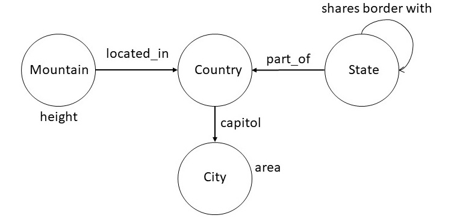

1. Introduction
In previous chapters, we have discussed the design of a knowledge
graph, different methods for creating it, and techniques for doing
inference with it. We will now turn our attention to how users
interact with a knowledge graph. To some degree, the design of
interaction begins with the design of a knowledge graph schema as
the schema is meant to be easily understood. In fact, a key
advantage of knowledge graphs is that the conceptual view of a
domain expressed in the schema is also the basis for its
implementation. In this chapter, we will
consider interaction techniques once the knowledge graph schema has
been populated with instances.
The purpose of a knowledge graph is to answer a user's questions.
Some of the questions may be known upfront, while some questions users
may never think of themselves. The interaction of a user with the
knowledge graph could be real-time, or a batch process might be run to
produce certain reports to answer some predefined questions and to
produce certain analytics. This results in a matrix of four different
modes of interaction interactions with the knowledge graph along the
dimensions of whether the interaction is initiated by the user (ie,
Pull), or in response to information presented to the user (ie, Push),
and whether the questions are known in advance vs questions are not
known in advance.

Above modes of interaction are usually supported through a
combination of search, query answering, and graphical interfaces. A
search interface is like the interface of a search engine where
the user may simply type keywords. The query interfaces range from a
formal query language to a natural language interface. A graphical
interface may be used for composing a query, for viewing the results
of a query or for browsing the graph defined by the instances in the
knowledge graph.
The actual interface to a knowledge graph will typically use a
combination of methods. For example, a query might be composed
through a combination of search and structured query interface.
Similarly, the results may be partly graphical, and partly textual.
In this section, we will consider graphical visualization of
knowledge, structured query interface, and a natural language query
interface. Formal query languages such as Cypher and SPARQL have
already been covered in the previous chapters.
2. Visualization of a Knowledge Graph
It is too common for us to see graphical visualizations of
knowledge graphs containing thousands of nodes and edges on a screen.
Many times, the graphical visualization is simply a backdrop for the
points to be made in contrast to driving and contributing to the insights
that help us identify what points to make. Just because we are
working with a knowledge graph, it should not automatically imply that
a graphical visualization is the best way to interact with it. One
should turn to the best principles for visualization design, and
choose the most effective medium for presenting the
information. Consequently, we begin this section by summarizing the key
principles for visualization design, and then outline a few best
practices for graphically visualizing knowledge graphs.
2.1 General Principles for Visualization Design
The overall purpose for visualizing a knowledge graph is to
come up with a representation of the data to significantly amplify
its understanding by the end-user. The improvement in user
understanding results from the effective use of the following
elements. First, the visualization presents more information in a
display than the user might be able to remember at one time. Second,
it takes away the burden from the user for having to look for
important pieces of information. Third, by placing relevant data
next to each other, it enhances the ability to make
comparisons. Fourth, it keeps track of user's attention as they are
navigating the information. Fifth, it provides a more abstract view
of a situation through omission and recoding of
information. Finally, by letting the user interact and manipulate
the visualization, it helps the user in deeply engaging and
immersing in the information.
A visualization is an adjustable mapping from the data to a visual
form for a human perceiver. A Knowledge graphs is powerful because
its schema can be visualized directly in the same form in which it
is stored as a data, i.e., without requiring any transformation. We
should not assume this approach to always carry over when we are
visualizing the data stored in the knowledge graph, because, the
stored data size is much larger than the size of the schema. We, therefore,
need to explicitly undertake a design of visual structures for best
presenting knowledge graph data.
The design of a visual structure involves mapping the desired
information into a combination of ways for visual encoding: spatial
substrate, marks, connection and enclosure, retinal properties, and
temporal encoding. Choosing an appropriate spatial encoding for our
information is the first and the most important step. For example, if we
want to display geographical data, usually its representation on a
map is most intuitive. For non-graphical data, we may choose
suitable axes and coordinates along which to display
information. Marks are visible things that occur in space, and help
a user in distinguishing different data values (e.g., points, lines,
area and volume). Connections include graphs, trees, and other
hierarchical organizations. Enclosing lines can be drawn around
certain objects. Retinal properties include elements such as color,
crispness, resolution, transparency, hue, saturation, etc. to
visually highlight certain aspects of the data. Finally, a temporal
encoding as an animation can enhance a visualization and help us see
the dynamics of how the data change over a period of time.
We can group the visualizations into four categories: simple,
composed, interactive, and attentive reactive. In a simple
visualization, we show up to three different dimensions/variables
which is considered the barrier for human understandability. In a
composed visualization, we combine one or more simple visualizations
so that we can capture more variables in the same display. In an
interactive visualization, the user can selectively explore, expand
and navigate through the information. Finally, in an
attentive/reactive visualization, the system responds to user
actions, and the system potentially anticipates the most useful
things to display next.
2.2 Best Practices for Knowledge Graph Visualization
In the previous section, we reviewed some of the principles for
designing visualizations, and argued that we should never assume that
displaying all the data in a graph in a cluttered display is the most
useful presentation. In this section, we consider a recipe for the
design of a knowledge graph visualization that leverages some of the
principles considered in the previous section.
The design of visualization for a knowledge graph could be divided
into the following steps. First, determine which variables of the
problem domain to map into spatial position in the visual
structure. Second, combine these mappings to increase
dimensionality. Third, use retinal properties as an overlay to add
more dimensions. Fourth, add controls for user interaction so that
selective navigation is possible. Finally, consider attention-reactive
features to expand space and manage attention.
A possible visualization for a knowledge graph would have the
following elements: overview, dynamic queries, zooming in, details
on demand, and retrieval by example. As the amount of data in a
knowledge graph is huge, we could begin by presenting an aggregated
summary of the data. The user can then filter the data and focus on
an area of interest by either posing queries or zooming into certain
parts of the data. While viewing a segment of knowledge
graph, the user could ask for details on a particular
element. Finally, as a use of attentive-reactive feature, the system
could proactively make suggestions of the kind of data elements that
already exist in the knowledge graph, and offer a choice to the user
to select retrieving them.
3. Structured Query Interfaces
A structured query interface can be an important ingredient to
interacting with a knowledge graph. In such an interface, the user
starts typing expressions, with system suggesting completions in a way
that the resulting expression can be mapped into an underlying query
language such as Cypher or SPARQL. To illustrate structured queries,
consider the following snippet of a knowledge graph schema from
Wikidata.

For the instance data corresponding to the above schema, we can
pose the following queries.
| city with largest area |
| top five cities by area |
| countries whose capitals have area at least 500 squared kilometers |
| states bordering Oregon and Washington |
| second tallest mountain in France |
| country with the most number of rivers |
One way to specify a structured query interface is to specify rules
of grammar in the Backus Naur Form (BNF). The rules shown below
illustrate this approach for the set of examples considered above.
| <np> ::= <noun> "and" <noun> |
| <np> ::= <geographical-region> | |
| <geographical-region> <spatial-relation> <geographical-region> |
| <geographical-region> ::= "capital of country" | "city" | "country" | |
|
"mountain" | "river" | "state" |
| <property> ::= "area" | "height" |
| <aggregate-relator> ::= "with the most number of" | "with largest" |"with" |
| <aggregate-modifier> ::= "top" <number> | "second tallest" |
| <spatial-relation> ::= "bordering" | "inside" |
| <number-constaint> ::= "atleast" <quantity> |
| <quantity> ::= <number> <unit> |
| <unit> ::= "Square Kilometer" |
| <ranking> ::= "by" |
We can reduce the queries above to expressions that conform to the
grammar above. For example, the first query, "city with the largest
area", conforms to the following expression:
| <geographical-region> <aggregate-relator> <property> |
Next consider the query "top five cities by area". The following
expression that captures this query is equivalent to "top five city
by area". For our structured query interface to be faithful to
original English, we will need to incoporate the lexical knowledge
about plurals.
| <aggregate-modifier> <geographical-region> <ranking> <property> |
Finally, we show below the expression for the third query:
"countries whose capitals have area at least 500 squared
kilometers". The expression show below has the following version in
English: "country with capital with area at least 500 squared
kilometers". In addition to the incorrect pluralization, it uses
different words, for example, "with" instead of "whose", and "with"
instead of "have". Most reasonable speakers of English would consider
both the queries to be equivalent. This example highlights the
tradeoffs in designing structured query interfaces: they may not be
faithful to all the different ways of posing the query in English, but
they can handle a large number of practical useful cases. For
example, the above grammar will correctly handle the query "state with
largest area", and a numerous other variations.
| <geographical-region> <aggregate-relator> <geographical-region> |
| <aggregate-relator> <property> <number-constraint> <quantity> |
Once we have developed a BNF grammar for a structured query
interface that specifies the range of queries of interest, it is
straightforward to check whether an input query is legal, and also
to generate a set of legal queries which could be suggested to the
user proactively to autocomplete what they have already typed. We
show below a logic programming translation of the above BNF
grammar.
| np(X) :- np(Y) & np(Z) & append(X,Y,Z) |
| np(X) :- geographical_region(X) |
| np(A) :- geographical_region(X) & spatial_relation(Y) & geographical_region(Z) & append(A,X,Y,Z) |
| geographical_region(capital) |
| geographical_region(city) |
| geographical_region(country) |
| geographical_region(mountain) |
| geographical_region(river) |
| geographical_region(state) |
| property(area) |
| property(height) |
| aggregate_relator(with_the_most_number_of) |
| aggregate_relator(with_largest) |
| aggregate_relator(with) |
| aggregate_modifier(second_tallest) |
| aggregate_modifier(X) :- number(N) & append(X,top,N) |
| spatial_relation(bordering) |
| aggregate_relation(insider) |
| number_constraint(X) :- quantity(Q) & append(X,atleast,Q) |
| quantity(Q) :- number(N) & unit(U) & append(Q,N,U) |
| unit(square_kilomters) |
| ranking(by) |
Improvements in structured queries accepted by the system require
improving the grammar. This approach can be very cost-effective for
situations where the entities of interest and their desired
relationships can be easily captured in a grammar. In the next
section, we consider approaches that aim to accept queries in English,
and try to overcome the problem of required engineering of the grammar
through a machine learning approach.
4. Natural Language Query Interfaces
A possible approach to go beyond the structured queries, and to get
around the problem of massive engineering of the grammar, is to use a
semantic parsing framework. In this framework, we begin with a
minimal grammar and use it with a natural
language parser that is trained to
choose the most likely interpretation of a question. A semantic
parsing system for understanding natural language questions has five
components: executor, grammar, model, parser and learner. We briefly
describe each of these components and then illustrate them using
examples.
Unlike traditional natural language parsers that produce a parse
tree, a semantic parsing system produces a representation that can
be directly executed on a suitable platform. For example, it could
produce a SPARQL or a Cypher query. The engine that evaluates the
resulting query then becomes the executor for the semantic parsing
system.
The grammar in a semantic parsing system specifies a set of rules
for processing the input sentences. It connects utterances to
possible derivations of logical forms. Formally, a grammar is set of
rules of the form α ⇒ β. We show below a snippet
of a grammar used by a semantic parsing system.
| NP(x) with the largest RelNP(r) ⇒ argmax(1,1,x,r) |
| top NP(n) NP(X) by the RelNP(r) ⇒ argmax(1,n,x,r) |
| NP(x) has RelNP(r) at least NP(n) ⇒ (< arg(x,r) n) |
The first rule in the above grammar can be used to process "city
with the largest area". The right-hand side of each rule specifies an
executable form. For the first rule, argmax(M,N,X,R) is a
relation that consists of a ranked list of X (ranked between M and N)
such that the ranking is defined on the R values
of X. Similarly, the third rule handles the query "countries
whose capital has area at least 15000 square kilomter". In the right hand side of the rule,
(< arg(X,R), N) specifies the computation to determine those X such that their
R value is less than N.
Given an input question, the application of grammar may result in
multiple alternative interpretations. A model defines a probability
distribution over those interpretations to specify which of them is
most likely. A common approach is to use the log-linear machine
learning model that takes as input the features of each
interpretation. We define the features of
an interpretation by maintaining a vector in which each position is
a count of how many times a particular rule of the grammar was
applied in arriving at that interpretation. The model also contains
another vector that specifies the weight of each feature for
capturing the importance of each feature. One goal of the learning
then is to determine an optimal weight vector.
Given a trained model, and an input, the parser computes its high
probability interpretation. Assuming that the utterance is given as a
sequence of tokens, the parser (usually a chart parser), recrusively
builds interpretations for each span of text. As the total number of
interpretations can be exponential, we typically limit the number of
interpretations at each step to a pre-specified number (e.g., 20). As a
result, the final interpretation is not guaranteed to be optimal, but it
very often turns out to be an effective heuristic.
The learner computes the parameters of the model, and in some
cases, additions to the grammar, by processing the training
examples. The learner optimizes the parameters to maximize the
likelihood of observing the examples in the training data. Even
though we may have the training data, but we do not typically have
the correct interpretation for each instance in the data. Therefore, the
training process will consider any interpretation that can reproduce an
instance in the training data to be correct. We typically use a
stochastic gradient descent to optimize the model.
The components of a semantic parsing system are relatively loosely
coupled. The executor is concerned purely with what we want to express
independent of how it would be expressed in natural language. The
grammar describes how candidate logical forms are constructed from the
utterance but does not provide algorithmic guidance nor specifies a way
to score the candidates. The model focuses on a interpretation
and defines features that could be helpful for predicting
accurately. The parser and the learner provide algorithms largely
independent of semantic representations. This modularity allows us to
improve each component in isolation.
Understanding natural language queries accurately is an extremely difficult
problem. Most semantic parsing systems report an accuracy in the
range of 50-60%. Improving the performance further requires
amassing training data or engineering the grammar. Overall success
of the system depends on the tight scope of the desired set of
queries and availability of training data and computation power.
5. Summary
In this chapter, we considered different ways end-users interact
with knowledge graphs. Perhaps, the most important take away from
this chapter should be that just because we are working with knowledge
graphs, it does not imply that displaying many nodes and
edges on a computer screen is the most appropriate way to interact
with it. Graphical views are often appropriate for the schema
information because of its limited size, but not always effective for
interacting with the instance data. We argued that the best user
interface needs to be designed by considering the business
problem to be solved, the kind of data we are working with, and the
resources that can be invested into the design and engineering. Best
interfaces, often, will use a combination of methods that leverage
search, structured queries, and use natural language question
answering only to a limited degree.
|
 CS520
CS520